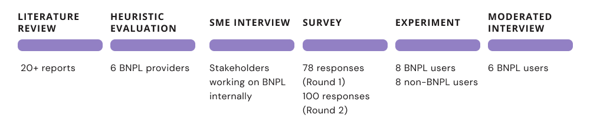

Buy Now, Pay Later

Why do Canadians between 18-35 choose to defer online payments using BNPL?
Background
During my internship at RBC, I worked with 2 other design research interns on the Mobile and I Want a Home journey teams to investigate Buy Now, Pay Later - an emerging alternative form of credit.
Buy Now, Pay Later is an increasingly popular method for online and in-store purchases in instalments, growing by 41.1% in 2021. The combination of an interest-free loan with no credit impact is especially popular with younger consumers who are more wary of conventional credit.
Methodology

To understand why people choose to defer payments, a multi-method approach aimed at diverging and then converging was chosen. Across all methods recruiting focused on our primary demography (Canadians ages 18-35) but included a mix of those who; currently use, had previously used, had not used and those who were open to BNPL.
My Role
Working alongside my fellow design researchers and with supervision and guidance from senior design researchers at RBC:
- Oversaw and co-ordinated participant recruitment
- Collaborated on creation of the discussion guide
- Lead moderator for interviews
- Co-analysis and synthesis of all insights
- Presentation of insights to relevant stakeholders
Research Process
- Literature review and stakeholder interviews with those working on BNPL initiatives at RBC. This helped to shape the research question and informed what methods would be best suited to understand the problem.
- Surveys (the what) uncovered what consumers were using BNPL for e.g. average spend, type of purchase.
- Unmoderated experiments were used to test stakeholders' assumptions that BNPL users had little credit literacy and did not understand what they were getting themselves into. Users were presented with a chart that progressively disclosed information about the potential credit impacts of different BNPL providers and asked which provider they preferred and why.
- Moderated interviews (the why) were required to better understand the context gained from the surveys and unmoderated experiments. Interview design was informed by the JTBD method where pull, push, inertia, and anxiety factors of users are investigated to understand why they made this decision. Since traditional credit is the default online payment option, using the JTBD method helped me investigate how early adopters of a new payment technology made this change. Interviews focused on:
- Financial and behavioural context behind purchases
- Why people use BNPL and the factors that influence this decision.
Key Findings
Our research found that people chose to use BNPL in order to:
- Take advantage of interest-free payments without relying on conventional credit,
- Flexibility in spreading out large transactions
- Have the instant gratification of purchasing items they may not be able to pay for in full immediately.
Use BNPL to take advantage of interest-free payments on big purchases like furniture which were planned in advance.
Use BNPL for impulse purchases and as an alternative to credit when credit availability was low.
Outcomes
The results of this research were presented at an RBC wide research jam and shared with internal stakeholders to influence future product directions especially around conventional credit, alternatives and how these influence consumer behaviour.
Thank you for reading!